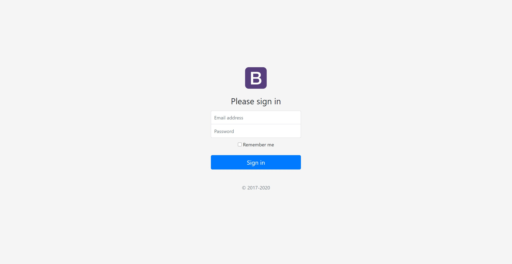

Készítsd el bootstrap segítésével a képen látható login screent: 
A designnak nem kell pixelpontosnak lennie.
A login box mind vertikálisan, mind horizontálisan középre van igazítva! Az ikont neked kell elkészítened, a háttérszíne és a betűtípus szabadon válaszható, a betű a keresztneved kezdőbetűje legyen. Ne button használj, hanem egyedi design-t készíts!
A designnak nem kell pixelpontosnak lennie!